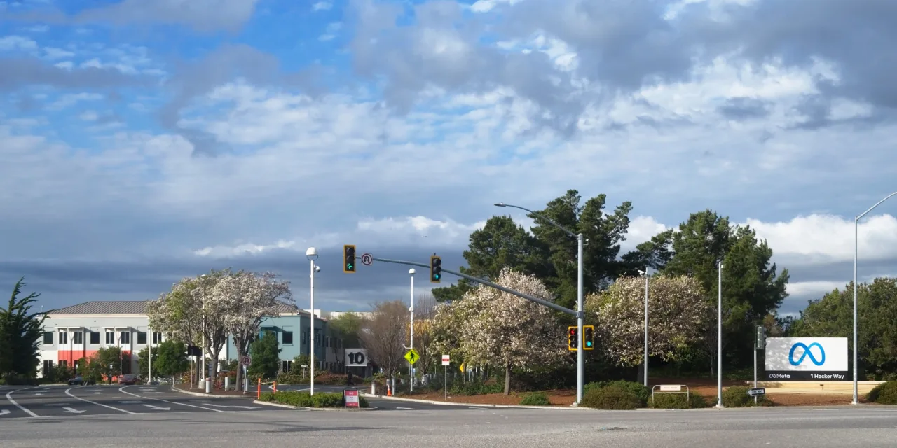

메타 주주가 지금 가장 궁금해할 질문은 회사가 돈을 잘 버느냐가 아닙니다. 이미 메타는 광고 사업에서 매우 강한 숫자를 냈습니다. 더 어려운 질문은 그 막대한 돈을 다시 AI 데이터센터, 서버, 네트워크, 모델 학습에 넣었을 때 몇 분기 뒤부터 광고 효율과 현금흐름으로 되돌아오느냐입니다. 좋은 광고 회사가 비싼 AI 인프라 회사로 바뀌는 순간에는 매출 성장률보다 회수 기간을 먼저 봐야 합니다.
메타의 2026년 1분기 실적 발표와 SEC 10-Q를 보면 핵심은 선명합니다. 매출은 563억1,100만 달러로 전년 대비 33% 증가했고, 희석 주당순이익은 10.44달러였습니다. 2026년 3월 기준 패밀리 앱 일간 활성 이용자는 평균 35억6,000만 명이었고, 광고 노출은 19%, 평균 광고 단가는 12% 증가했습니다. 광고 경매장이 더 많은 광고를 더 높은 가격에 소화했다는 뜻입니다.
다만 숫자가 좋아질수록 비용표도 같이 커졌습니다. 메타는 2026년 연간 설비투자 가이던스를 1,250억~1,450억 달러로 제시했습니다. 이 돈은 서버, 데이터센터, 네트워크 인프라, AI 칩과 관련된 지출로 이어집니다. 광고 매출이 좋아서 감당할 수 있다는 말은 절반만 맞습니다. 주가가 더 높은 평가를 받으려면 AI 지출이 광고 단가, 광고주 예산, 사용자 체류 시간, 잉여현금흐름으로 반복해서 돌아온다는 증거가 필요합니다.
광고 효율은 좋아졌지만 비용도 빨라졌습니다

메타의 광고 사업은 광장이라기보다 관심을 경매하는 시장에 가깝습니다. 이용자가 피드, 릴스, 스토리, 메시지 안에서 더 오래 머물고, 알고리즘이 광고 전환 가능성을 더 정확히 맞히면 광고주는 같은 예산으로 더 나은 결과를 기대합니다. 그래서 광고 노출 19% 증가와 평균 광고 단가 12% 증가는 단순한 가격 인상이 아니라 추천·타깃팅·광고 측정의 개선 신호로 읽을 수 있습니다.
하지만 광고 효율 개선은 AI 설비투자의 회수 증거가 되려면 더 오래 이어져야 합니다. 한 분기 동안 가격과 노출이 동시에 오른 것은 강한 신호입니다. 그러나 광고 경기는 소비 심리, 환율, 광고주 예산, 경쟁 플랫폼의 가격 정책에 민감합니다. 메타의 AI가 광고 전환율을 높인 부분과 거시 환경이 도와준 부분을 나누어 봐야 합니다. 투자자는 “AI 덕분에 광고가 좋아졌다”는 문장보다 평균 광고 단가가 다음 분기에도 유지되는지, 광고 노출 증가가 사용자 피로를 만들지 않는지를 확인해야 합니다.
알파벳은 검색과 유튜브, 레딧은 커뮤니티 기반 광고, 스냅은 젊은 이용자층과 증강현실 광고 포맷으로 메타와 같은 광고 예산을 나눠 가집니다. 메타가 강한 이유는 광고주가 이미 익숙한 대규모 도구와 전환 데이터를 갖고 있기 때문입니다. 반대로 약해질 수 있는 지점도 그 안에 있습니다. 광고주가 AI 광고 제작 도구를 쓰더라도 실제 구매 전환이 기대보다 낮으면 예산은 빠르게 다른 플랫폼으로 이동할 수 있습니다.
AI 인프라는 광고 매출의 선불 비용입니다
관련 영상
메타 광고 전략과 크리에이티브 타깃팅 변화를 설명하는 영어 롱폼 영상
메타의 AI 투자는 멋진 발표보다 광고 시스템의 원가 구조를 바꾸는 문제입니다. 더 큰 모델, 더 많은 추론, 더 빠른 추천 시스템은 광고 품질을 올릴 수 있습니다. 동시에 데이터센터 전력, 감가상각, 서버 교체, 네트워크 장비, 연구개발 인력 비용을 키웁니다. 광고 매출이 33% 늘어도 설비투자 계획이 1,450억 달러 상단까지 커지면, 주주는 매출 증가분 중 얼마가 실제 현금으로 남는지 다시 계산해야 합니다.
가장 중요한 지표는 자본지출 대비 광고 매출 증가분입니다. 예를 들어 광고 노출과 단가가 계속 오르는데 영업현금흐름과 잉여현금흐름도 같이 늘면 AI 투자는 방어할 수 있습니다. 반대로 광고 매출은 커지지만 설비투자와 감가상각이 더 빠르게 늘고, 자사주 매입 여력이 줄어든다면 투자자는 AI를 성장 엔진보다 비용 압력으로 보기 시작합니다. 메타 같은 초대형 플랫폼은 돈을 많이 버는 만큼 돈을 쓰는 속도도 빨라질 수 있습니다.
여기서 메타의 강점은 광고 제품을 직접 운영한다는 점입니다. 클라우드 회사처럼 외부 고객이 인프라 사용량을 늘려주기만 기다리는 구조가 아닙니다. 메타는 추천 알고리즘, 광고 입찰, 크리에이티브 생성, 메시징 광고, 쇼핑 전환을 한 시스템 안에서 실험할 수 있습니다. 그래서 AI 투자의 회수 경로가 가장 직접적인 빅테크 중 하나입니다. 다만 직접적이라는 말이 자동이라는 뜻은 아닙니다. 광고주가 더 높은 가격을 계속 받아들이는지가 마지막 판정 기준입니다.
Reality Labs는 여전히 비용표에 남아 있습니다
메타를 볼 때 광고 사업만 보면 회사가 아주 단단해 보입니다. 문제는 Reality Labs가 여전히 별도의 비용표로 남아 있다는 점입니다. 2026년 1분기 Reality Labs 매출은 4억200만 달러였고, 이 부문은 계속 큰 영업손실을 냈습니다. AI 안경, 혼합현실 기기, 차세대 컴퓨팅 인터페이스가 장기적으로 중요한 방향일 수는 있습니다. 하지만 현 시점에서 주주에게는 광고 현금흐름을 갉아먹는 장기 옵션에 가깝습니다.
이 부분이 중요한 이유는 메타가 이미 한 번 “미래 플랫폼”에 막대한 돈을 쓴 경험이 있기 때문입니다. 이번 AI 투자는 광고 사업과 더 직접적으로 연결되어 Reality Labs와는 다르게 볼 근거가 있습니다. 그래도 투자자가 경계해야 할 패턴은 같습니다. 기술 비전이 커질수록 경영진은 회수 기간을 길게 말하고, 시장은 그 시간을 밸류에이션으로 선반영합니다. 결과가 늦어지면 좋은 회사도 지루한 주식이 될 수 있습니다.
메타가 이 우려를 줄이려면 Reality Labs 손실을 광고 사업의 강도로만 덮는 것이 아니라, 웨어러블과 AI 서비스가 실제 사용자 행동과 매출로 이어지는 경로를 보여줘야 합니다. Ray-Ban Meta 같은 제품이 화제가 되는 것과 손익계산서가 좋아지는 것은 다른 문제입니다. 제품 판매, 사용 빈도, 광고·구독·메시징 매출과의 연결이 확인될 때 이 비용은 단순한 장기 실험에서 사업 투자로 바뀝니다.
다음 실적에서 볼 순서
첫 번째는 광고 단가입니다. 평균 광고 단가가 계속 상승한다면 메타의 AI 광고 엔진은 광고주에게 실제 효율을 제공하고 있을 가능성이 큽니다. 다만 단가 상승이 광고주 부담으로 바뀌는 순간 예산은 다른 채널로 이동할 수 있습니다. 그래서 단가와 광고 노출이 동시에 유지되는지 봐야 합니다. 단가만 오르고 노출이 둔화되면 플랫폼 피로가 시작됐을 수 있습니다.
두 번째는 설비투자 가이던스의 추가 상향 여부입니다. 이미 1,250억~1,450억 달러라는 숫자는 큽니다. 여기서 다시 상향되면 시장은 매출 성장보다 비용 증가 속도에 더 민감해질 수 있습니다. 세 번째는 잉여현금흐름과 자사주 매입입니다. 메타가 AI 투자를 확대하면서도 주주환원을 유지하면 시장은 지출을 견딜 수 있습니다. 반대로 주주환원이 줄고 감가상각 부담이 커지면 밸류에이션은 압박을 받습니다.
네 번째는 경쟁 플랫폼입니다. 레딧은 커뮤니티 검색과 데이터 라이선스, 스냅은 젊은 이용자와 카메라 기반 광고, 알파벳은 검색·유튜브·AI 광고 도구를 갖고 있습니다. 메타가 AI 광고 시장에서 계속 이기려면 광고주가 여러 플랫폼을 테스트해도 결국 메타에서 더 높은 전환을 확인해야 합니다. 그래서 메타 주주는 메타만 보지 말고 GOOGL, RDDT, SNAP의 광고 성장률과 ARPU 흐름도 함께 봐야 합니다.
메타는 여전히 세계에서 가장 강한 광고 플랫폼 중 하나입니다. 그러나 지금 주가를 설명하는 핵심은 “광고가 잘된다”가 아니라 “광고가 AI 지출을 얼마나 빨리 갚아주는가”입니다. 다음 몇 분기 동안 광고 단가, 노출, 설비투자, 잉여현금흐름이 같은 방향으로 움직이면 메타의 AI 투자는 정당화될 수 있습니다. 하나라도 어긋나면 시장은 성장률보다 회수 기간을 먼저 따질 것입니다.